Префектура Иватэ · Тоно · пиво
Тоно, край хмеля: пивоварня у станции, хмелевые поля и праздник урожая
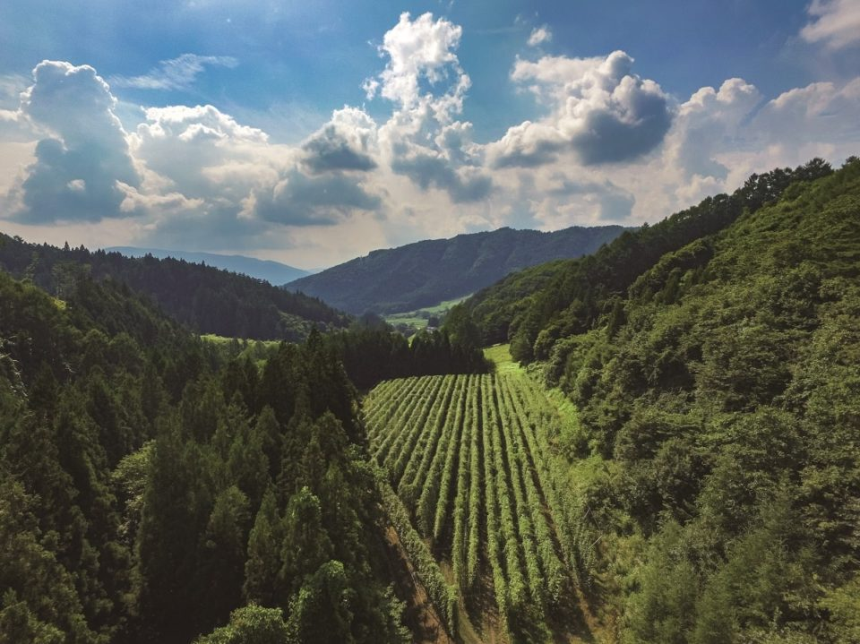
Тоно, город в префектуре Иватэ, по площади хмелевых полей первый в Японии. Здесь фермеры, город и пивовары решили вместе сделать из хмеля новое занятие для всего края, и к 2019 году у Тоно уже были своя пивоварня у станции, пивные туры и летний праздник урожая.
История
Хмель, который чуть не исчез
Хмель даёт пиву аромат и горечь, и в Японии его больше всего выращивают в Тоно. Здесь его начали сажать в 1963 году. Прохладный климат с большой разницей дневных и ночных температур и редкие тайфуны оказались для хмеля идеальными. Начинали с 7,6 гектара, а к пику около 1983 года поля разрослись до 112 гектаров.
По площади посадок Тоно и в 2019 году оставался первым в стране, но и площадь, и урожай сократились примерно впятеро по сравнению с пиком. Главная причина в возрасте фермеров: хмелеводы старели, смены не было, и само будущее хмеля в Тоно оказалось под вопросом.
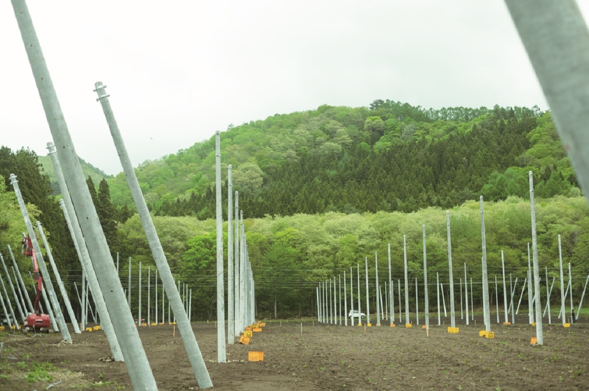
Спасать хмель взялись вместе город Тоно, сами хмелеводы и компания Kirin, которая уже полвека закупает здешний хмель по контрактам с фермерами. В 2007 году они запустили проект TK (Тоно и Kirin), чтобы вместе с жителями превратить Тоно в «край пива» с хмелем в центре.
Город стал принимать новых фермеров, переехавших из других мест, и устраивать пивные туры. Из этого же движения родилась и пивоварня Tono Brewing. Город, который мог потерять своё главное поле, начал меняться вокруг хмеля.
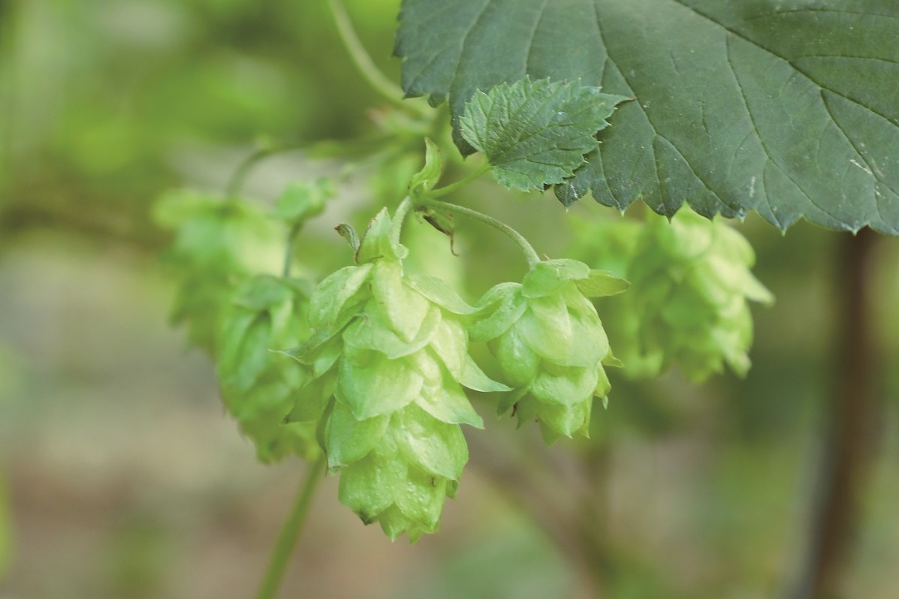
Близость
Поле и пивоварня в одном городе
Положение Тоно редкое даже по мировым меркам. В городе самые большие в Японии хмелевые поля, и тут же работают две пивоварни: Tono Brewing и сакэварня «Камихэй сюдзо», которая варит пиво ZUMONA. Поля и пивоварни так близко друг к другу бывают нечасто, и эта близость открывает новые возможности.
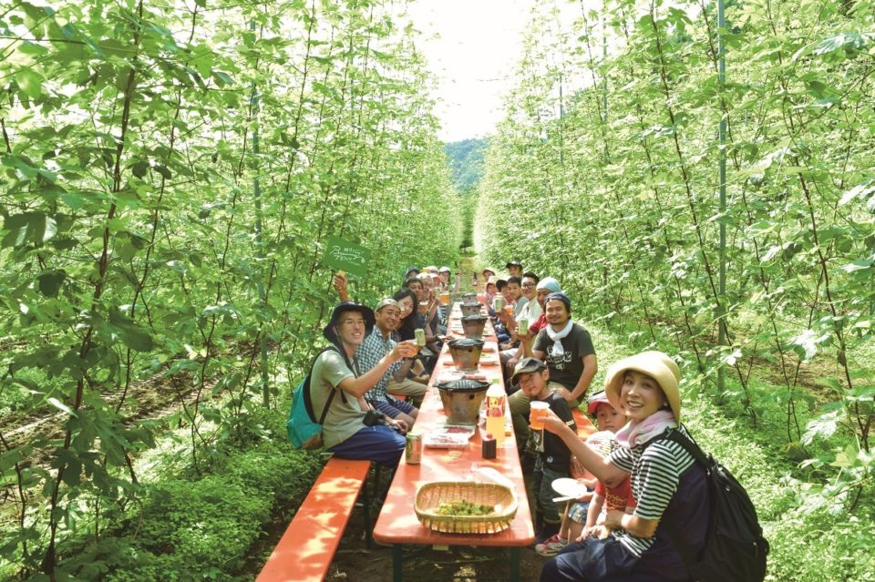
Близость значит, что хмель можно отправить в чан сразу после сбора. Сорванные шишки быстро теряют влагу, а вместе с ней улетучиваются и свежие ароматы. В Тоно пивовары успевают сварить пиво на свежем, только что собранном хмеле, и у такого пива сочный аромат, который трудно найти где-то ещё.
На этой же близости построены пивные туры. Летом, когда хмель стоит зелёной стеной, можно приехать на поле и выпить пива прямо там, сорвать шишку и положить её на пену. Такое удаётся попробовать нечасто.
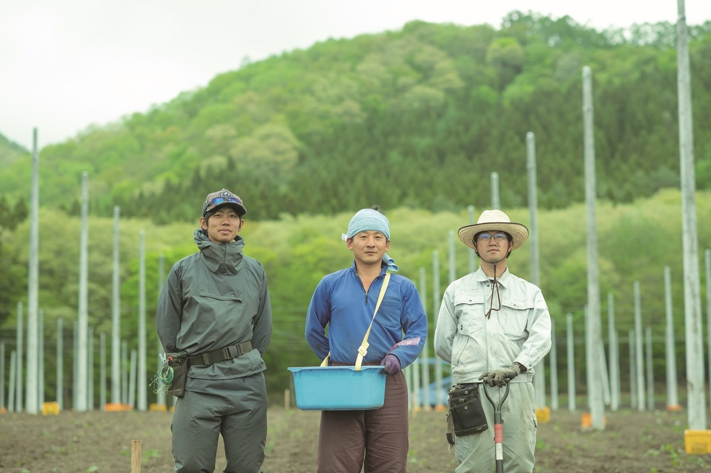
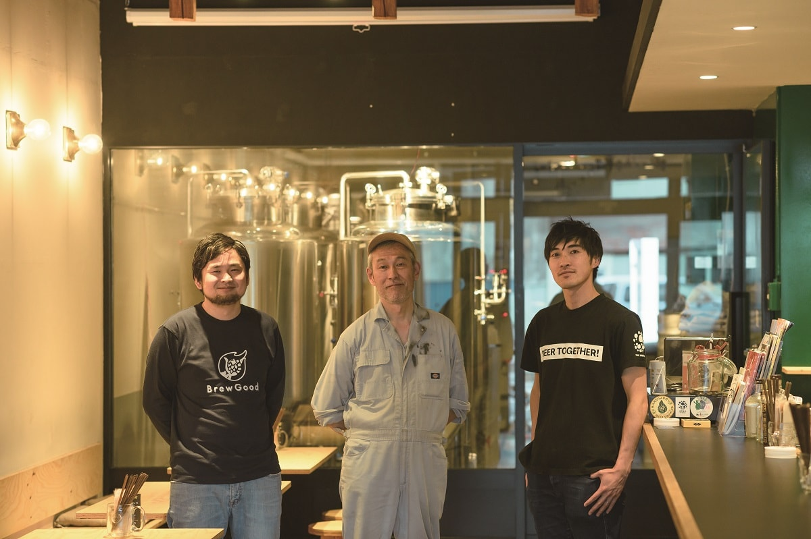
Близость сокращает и расстояние между людьми. Хмелеводы сами участвуют в варке пива, и такого, кажется, тоже больше почти нигде нет.
«Мы хотим сварить настоящий сезон, такой, какой хмелеводы хотели бы пить у себя на поле»
один из основателей Tono Brewing
Сезон это стиль пива родом из Бельгии: им когда-то утоляли жажду во время полевых работ. Рецепт пивовары обсуждали вместе с фермерами. Хмель связывает в Тоно всех, и все идут в одну сторону.
Пивоварня
Tono Brewing: пивоварня для всего города
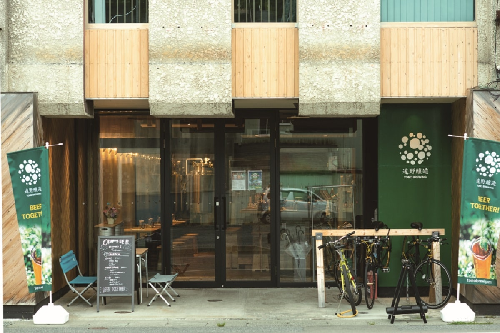
Tono Brewing (по-японски «Тоно дзёдзо») открыли в мае 2018 года трое основателей, переехавших в Тоно. Задумка была шире, чем просто варить пиво.
«Мы хотели место, где соединяются и созревают хмель и всё, что есть в этом краю. Не только варить пиво, но и стать центром для местного сообщества»
основатели Tono Brewing
В 2019 году японская провинция снова обращала внимание на пиво. Первый раз это случилось во второй половине 1990-х годов, когда по стране прошла волна местного пива «дзи-бииру», но она быстро сошла на нет: качество часто хромало, а цены были высокими. Пиво варили и ради оживления края, но мало кто из пивоварен думал на долгий срок.
Примерно с 2010 года в моду вошло крафтовое пиво. Оно выросло под влиянием американских стилей вроде IPA, и пивовары варили то, что хотели сами. К 2019 году крафт снова стал поворачиваться к своей земле.
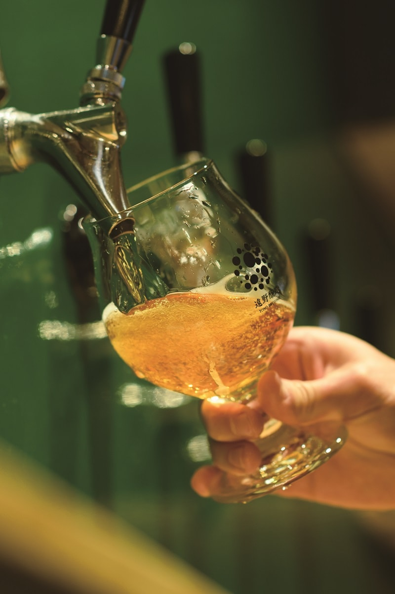
От прежней волны новое движение отличается тем, что пивовары варят не сувенирное пиво, а растут вместе с краем. Tono Brewing одна из пивоварен, которые идут в этом впереди. Основатели думали, как сделать, чтобы пиво пили сами жители, и решили, что пивоварня должна работать не точкой, а на весь город. Отсюда пивные туры и совместные сорта с местными производителями, например пшеничное пиво с жимолостью хаскап.
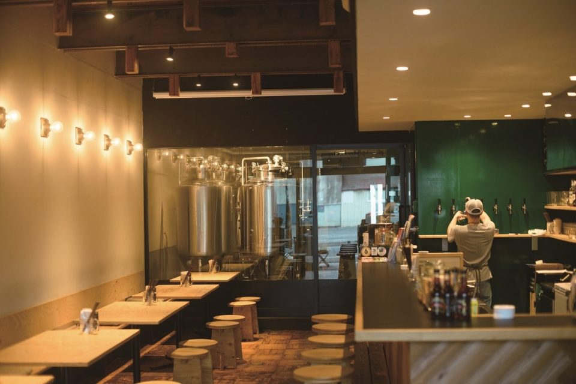
В 2019 году пиво Tono Brewing, кроме разных событий, можно было выпить только в её собственном тапруме. Сюда приходили и местные, и гости из других городов и префектур, которые ехали в Тоно специально ради этого пива.
«Всё больше людей приезжают издалека и остаются на ночь, нас даже хозяева гостевых домов благодарили»
один из основателей Tono Brewing
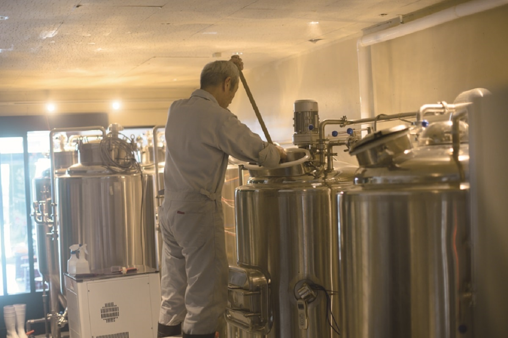
Tono Brewing TAPROOM
- Адрес
- префектура Иватэ, Тоно, Тюо-дори, 10-15
- Телефон
- +81 198-66-3990
- Часы работы
- понедельник, среда, четверг, пятница 17:00–22:00, суббота 12:00–22:00, воскресенье 12:00–21:00
- Выходные
- вторник
- Как добраться
- 3 минуты пешком от станции Тоно
- Сайт
- tonobrewing.com
Праздник
Праздник урожая хмеля
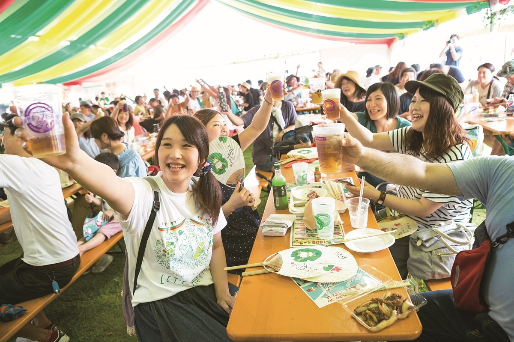
Лето самое оживлённое время года в Тоно. Хмель собирают в конце августа: во второй половине месяца на полях выходят на сбор все хмелеводы. В эти же дни проходит праздник урожая хмеля в Тоно, и пивные туры собирают больше всего гостей.
Праздник проводят местные компании, в первую очередь Tono Brewing и BEER EXPERIENCE. Важную роль играет город: то, что могут сделать частные компании, он отдаёт им, а поддержку обеспечивает соглашение между JR, городом Тоно и компанией Kirin. Город и бизнес здесь действуют заодно, поэтому такой праздник и получается.
В 2019 году к празднику собирались пустить дополнительные поезда из Тоно в Мориоку и Итиносэки, и на поезде в Итиносэки можно было успеть ещё и на Национальный фестиваль местного пива. Для тех, кто хочет попробовать пиво Тоно и всего Тохоку, это самое подходящее время. В 2026 году праздник прошёл 21–23 августа на той же площади, и все три пивоварни города сварили для него особое пиво из хмеля Тоно.
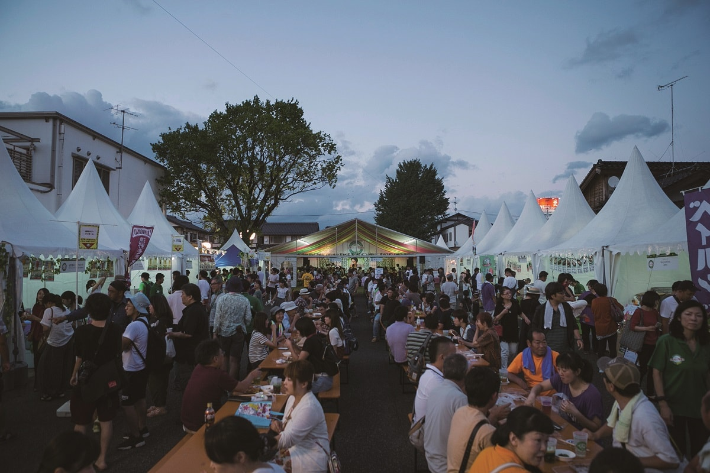
Тур
Вечер с пивным гидом
Пивные туры возможны только там, где пытаются оживить край хмелем и пивом. В апреле 2019 года в Тоно запустили вечерний тур «Тоно найт бир хоппинг»: гид по пивному туризму водит гостей по трём заведениям, которые выбрал сам.
Сбор в 18:00, и первая остановка в тапруме Tono Brewing: свежее пиво здесь пьют, глядя на варочное оборудование. Вторая остановка в итальянском ресторане Koyomina. Здесь к двум бокалам пива ZUMONA подают блюда из продуктов Тоно, а шеф объясняет, почему он выбрал именно такие пары.
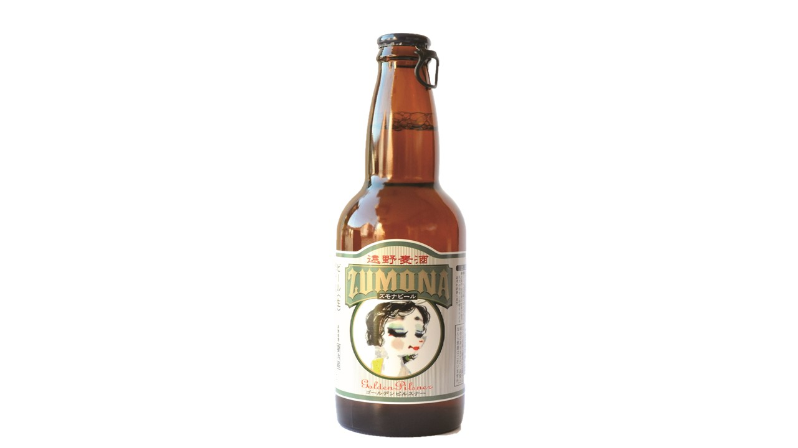
Третья остановка в старом винном магазине «Асакура сакэтэн». Здесь пробуют хмелевой сётю и пиво, и тот, кому мало, может купить бутылку и допить в гостинице или пойти в бар DAKKE, который советует гид.
Три часа, за которые Тоно раскрывается очень плотно. В 2019 году тур проводили от трёх человек, стоил он от 8500 иен с человека, записаться нужно было за три дня, а с июня того же года собирались запустить и дневной вариант.
Праздник урожая хмеля в Тоно
- Даты
- 24 и 25 августа 2019 года
- Часы работы
- 11:00–21:00, последний заказ 20:30
- Адрес
- префектура Иватэ, Тоно, площадь «Кура-но мити хироба»
- Телефон
- +81 198-62-2111 (оргкомитет праздника при мэрии Тоно)
- Сайт
- lets-hopping.com
Фото: Рюмон Кагиока, Brewing Tono, Tono Brewing.